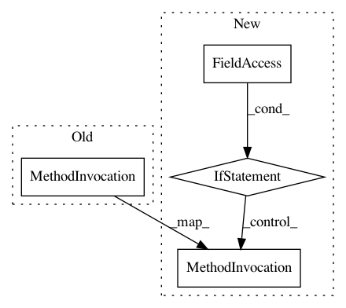

7b414fbc6c221eb3a06f8a1c1a08c9dc13608e93,secuml/core/features_analysis/plots.py,FeaturePlots,export,#FeaturePlots#,57
Before Change
self.boxplot.display(path.join(output_dir, "boxplot.png"))
self.barplot.export_to_json(path.join(output_dir,
"histogram.json"))
self.density.display(path.join(output_dir, "density.png"))
def _gen_plot_datasets(self, instances):
self.plot_datasets = {}
self._gen_label_plot_dataset(instances, MALICIOUS)
After Change
self.boxplot.display(path.join(output_dir, "boxplot.png"))
self.barplot.export_to_json(path.join(output_dir,
"histogram.json"))
if self.with_density:
self.density.display(path.join(output_dir, "density.png"))
def _gen_plot_datasets(self, instances):
self.plot_datasets = {}
self._gen_label_plot_dataset(instances, MALICIOUS)
self._gen_label_plot_dataset(instances, BENIGN)
In pattern: SUPERPATTERN
Frequency: 1
Non-data size: 4
Instances
Project Name: ANSSI-FR/SecuML
Commit Name: 7b414fbc6c221eb3a06f8a1c1a08c9dc13608e93
Time: 2019-05-03
Author: anael.beaugnon@ssi.gouv.fr
File Name: secuml/core/features_analysis/plots.py
Class Name: FeaturePlots
Method Name: export